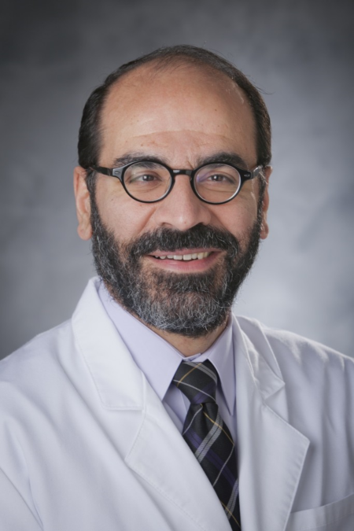
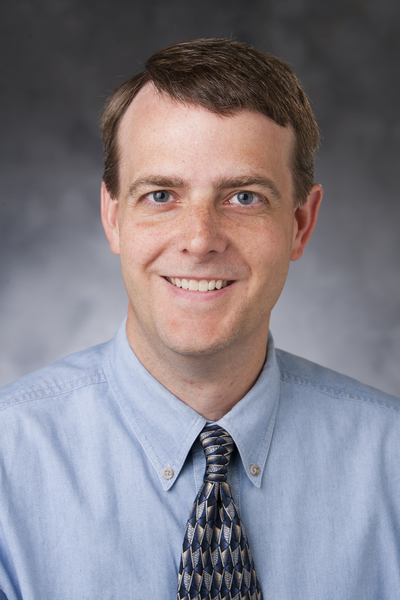
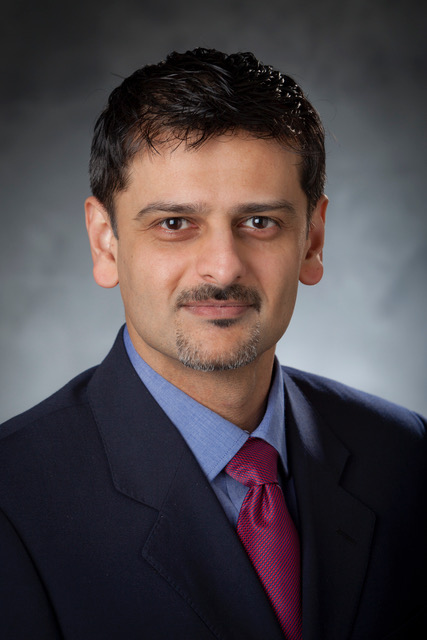
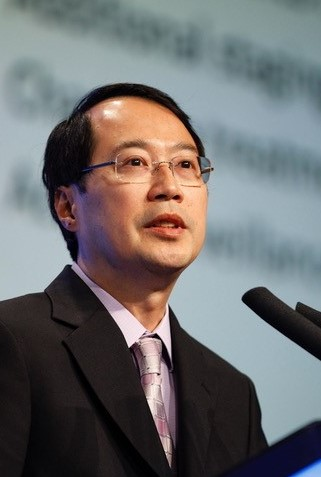
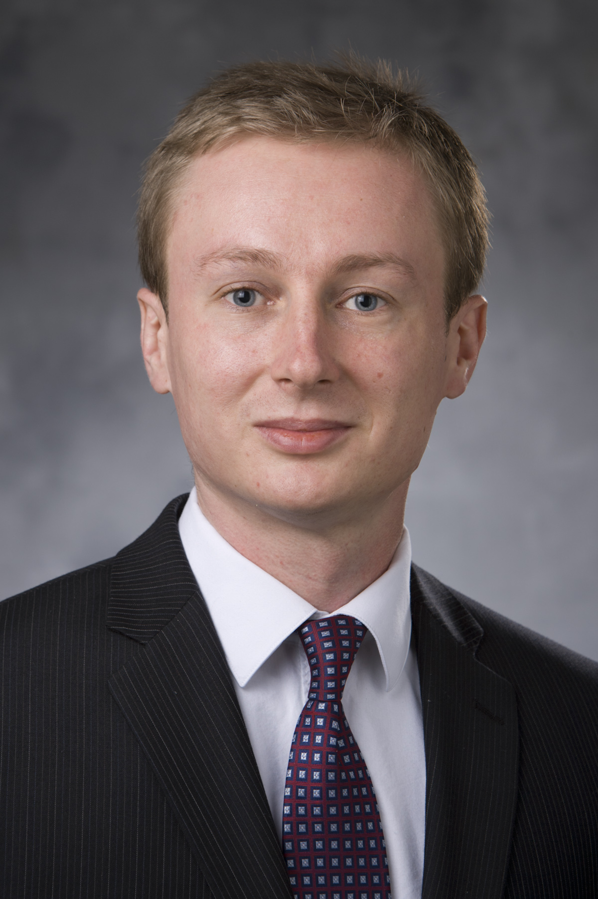
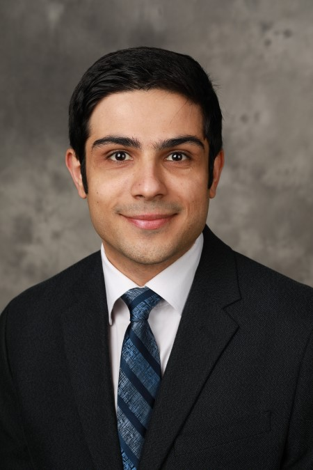

Meet Our Team
 |
Ehsan Samei, PhD, DABR, FAAPM, FSPIE, FAIMBE Chief, Duke Clinical Imaging Physics Group Director, Medical Physics Graduate Program Director, Imaging Physics Residency Program Professor, Departments of Radiology, Physics, Biomedical Engineering, Electrical and Computer Engineering Email: ehsan.samei@duke.edu | Scholars@Duke | Google Scholar | Radiology Profile |
Dr. Ehsan Samei is a Persian-American medical physicist. He is a Professor at Duke University with five departmental affiliations (Radiology, Medical Physics, Biomedical Engineering, Physics, and Electrical and Computer Engineering) and serves as the Director of the Duke Medical Physics Graduate Program and Clinical Imaging Physics. He is a Fellow of the American Association of Physicists in Medicine (AAPM), the International Society of Optical Engineering (SPIE), and the American Institute of Medical and Biomedical Engineering (AIMBE). He has an active interest in bridging the gap between scientific scholarship and clinical practice, in the meaningful realization of translational research, and in healthcare that is informed by scientific evidence. He has mentored over 100 trainees, has published over 230 referred journal papers, and been the recipient of over 30 extramural grants. He is also a musician and has an active interest in common traits and interactions between science, art, and faith. He has ran five marathons (3:17 PR), including the 2013 Boston Marathon, is married to Dr. Maija Samei, a scholar of medieval Chinese literature, and is blessed with four energetic children!
|
 |
W. Paul Segars, PhD Associate Professor, Departments of Radiology and Biomedical Engineering Email: paul.segars@duke.edu | Google Scholar | MyNCBI | Radiology Profile | Duke OLV |
Dr. Segars is an associate professor of radiology and biomedical engineering, a faculty member in the medical physics graduate program, and a member of the Carl E. Ravin Advanced Imaging Laboratories (RAILabs) at Duke University. His research involves the development of computer-based simulation tools for medical imaging research including realistic anatomical and physiological models or phantoms that serve as virtual subjects to evaluate and improve imaging devices and techniques. |
 |
Anuj J. Kapadia, PhD Director of Graduate Studies, Medical Physics Graduate Program Assistant Professor, Department of Radiology Email: anuj.kapadia@duke.edu | Google Scholar | ResearchGate | LinkedIn | Scholars@Duke |
Dr. Kapadia is an Assistant Professor of Radiology and Physics, and the Director of Graduate Studies for Medical Physics. He received his PhD in Biomedical Engineering in 2007 and joined Duke faculty in 2009. Dr. Kapadia’s research focuses on developing novel imaging technologies for cancer detection, Monte Carlo simulation development, and image quality and dosimetry analytics in CT. |
 |
Joseph Y. Lo, PhD Director, Carl E. Ravin Advanced Imaging Laboratories Associate Vice Chair of Research, Department of Radiology Professor, Departments of Biomedical Engineering, Electrical & Computer Engineering, Medical Physics, and Radiology Email: joseph.lo@duke.edu | Scholars@Duke | Radiology Profile | Website |
Joseph Lo, PhD is Professor and Associate Vice Chair for Research of the Department of Radiology, Duke University School of Medicine. He is the Director of the Carl E. Ravin Advanced Imaging Laboratories, which includes 6 core faculty and over 40 other faculty, staff, and students. He serves as Faculty and Director of the Diagnostic Imaging Track in the Graduate Program in Medical Physics, and also holds secondary appointments in Biomedical Engineering and Electrical and Computer Engineering. In the areas of medical education, Dr. Lo leads the radiology resident physics education program, and serves as course director for the Radiology, Radiation Oncology, and Medical Physics Study Program that is part of the medical student Third Year Scholarly Experience. In his fourth decade here, Dr. Lo is a “Dukie” through and through, attaining his bachelor and doctoral degrees and advancing through the ranks as a faculty. He has pursued research in a wide range of medical imaging topics including machine learning, computer vision, technology assessment, phantom modeling, and 3D printing. When he is not being a workaholic, he enjoys photography, crashing drones, cooking, wine tasting, and inventing craft cocktails.
|
 |
Maciej A. Mazurowski, PhD Associate Professor, Departments of Radiology and Electrical & Computer Engineering Email: maciej.mazurowski@duke.edu | Google Scholar | Scholars@Duke | Radiology Profile | Research Gate |
Dr. Maciej Mazurowski is an Associate Professor of Radiology and Electrical and Computer Engineering at Duke University. Dr. Mazurowski is also a faculty in the Duke Medical Physics Program and a member of Duke Cancer Institute. His main research focus is on applications of machine learning including deep learning and statistical modeling as well as computer vision algorithms to medicine. The particular focus in terms of applications is medical imaging in the context of cancer treatment as well as understanding image interpretation process and error-making in radiology. One of the main research directions in Mazurowski lab is imaging-based cancer biomarkers and radiogenomics. Specifically, our focus is on predicting patient outcomes in breast and brain cancers (lower and high grade gliomas) as well as finding associations of imaging features with molecular subtypes and other genomic markers for these cancers. Another important research direction of the lab is development of human observer models that capture error-making patterns of the radiology trainees when they analyze medical images. The ultimate goal of this research is to reach a better understanding of decision and error making in radiologists and to construct an adaptive computer-aided education system for radiology.
|
Key Collaborating Investigators (To be deleted: from this section on)
|
Aiping Ding, PhD Radiation Physicist, Clinical Imaging Physics Group Email: aiping.ding@duke.edu | Scholars@Duke |
Dr. Aiping Ding is a Medical Physicist and Faculty of Duke University Medical Physics Graduate Program. He is an internationally recognized expert in the area of human anatomical modeling, radiation dose calculations (x-ray doses in particular), and web-based Software as a Service (SaaS) development. The objective of his research is to assess how much radiation a worker or a patient receives when being exposed to ionizing radiation – such as that found in a medical diagnostic or radiotherapy procedure in a hospital. Dr. Ding is the first to have developed a set to computational obese phantoms to help better understand how radiation in CT scans affect the bodies of heavier people. Dr. Ding’s study was published as a “FEATURE ARTICLE” in the Physics in Medicine and Biology and has received more >14,000 times downloads and over 100 times media attentions, including by The Wall Street Journal, U.S. News, and HuffPost. It was ranked among the top 10 most popular papers and Highlights of 2012. Up to now, He had authored or co-authored about 40 papers and presented 20 times at several international conferences, such as the annual meetings of the American Association of Physicists in Medicine (AAPM), the Society of Nuclear Medicine & Molecular Imaging (SNMMI), Health Physics Society (HPS), and the Radiological Society of North America (RSNA). His current research focuses on the development of a new performance informatics platform for assessing radiation dose and quality of medical images using patient data and predictive analytics. |

|
Donald P. Frush, MD, FACR, FAAP Professor, Departments of Radiology, Pediatrics, Medical Physics Email: donald.frush@duke.edu | Scholars@Duke | Radiology Profile | Donald P. Frush, MD, is the John Strohbehn Professor of Radiology and Professor of Pediatrics, Duke University Medical Center in Durham, North Carolina. Dr. Frush’s research interests are predominantly involved with pediatric body computed tomography (CT), including technology assessment, techniques for pediatric multidetector computed tomography (MDCT) examinations, assessment of image quality, and CT radiation dosimetry and radiation protection in medical imaging. Dr. Frush is or has been a member of various committees and scholarly societies. Committee memberships include past chair of the Commission on Pediatrics, American College of Radiology; Trustee (Pediatrics), American Board of Radiology; past chair of the board and past president for the Society for Pediatric Radiology; board member, National Council of Radiation Protection and Measurements; chair of the RSNA Refresher Course Committee; as well as current chair of the Image Gently Alliance. Dr Frush has also worked internationally with both the World Health Organization and International Atomic Energy Agency with radiation protection projects in medical imaging. |

|
Anuj J. Kapadia, PhD Director of Graduate Studies, Medical Physics Graduate Program Assistant Professor, Department of Radiology Email: anuj.kapadia@duke.edu | Google Scholar | ResearchGate | LinkedIn | Scholars@Duke |
Dr. Kapadia is an Assistant Professor of Radiology and Physics, and the Director of Graduate Studies for Medical Physics. He received his PhD in Biomedical Engineering in 2007 and joined Duke faculty in 2009. Dr. Kapadia’s research focuses on developing novel imaging technologies for cancer detection, Monte Carlo simulation development, and image quality and dosimetry analytics in CT. |
|
Joseph Y. Lo, PhD Director, Carl E. Ravin Advanced Imaging Laboratories Associate Vice Chair of Research, Department of Radiology Professor, Departments of Biomedical Engineering, Electrical & Computer Engineering, Medical Physics, and Radiology Email: joseph.lo@duke.edu | Scholars@Duke | Radiology Profile | Website |
Joseph Lo, PhD is Professor and Associate Vice Chair for Research of the Department of Radiology, Duke University School of Medicine. He is the Director of the Carl E. Ravin Advanced Imaging Laboratories, which includes 6 core faculty and over 40 other faculty, staff, and students. He serves as Faculty and Director of the Diagnostic Imaging Track in the Graduate Program in Medical Physics, and also holds secondary appointments in Biomedical Engineering and Electrical and Computer Engineering. In the areas of medical education, Dr. Lo leads the radiology resident physics education program, and serves as course director for the Radiology, Radiation Oncology, and Medical Physics Study Program that is part of the medical student Third Year Scholarly Experience. In his fourth decade here, Dr. Lo is a “Dukie” through and through, attaining his bachelor and doctoral degrees and advancing through the ranks as a faculty. He has pursued research in a wide range of medical imaging topics including machine learning, computer vision, technology assessment, phantom modeling, and 3D printing. When he is not being a workaholic, he enjoys photography, crashing drones, cooking, wine tasting, and inventing craft cocktails.
|
|
Daniele Marin, MD Associate Professor, Department of Radiology Medical Director, Multi-Dimensional Image Processing Laboratory Email: daniele.marin@duke.edu | Scholars@Duke | Radiology Profile |
Dr. Marin’s clinical and research interests focus on medical imaging with specific emphasis on quantitative imaging, clinical applications of dual energy CT, and new strategies for radiation dose reduction at CT. Dr. Marin received his medical degree in 2003 from the University of Rome Sapienza, Italy. After a residency at the University of Rome Sapienza, he completed a four-year research and clinical fellowship in Abdominal and Cardiovascular Imaging at Duke University and joined the Duke University faculty in July 2012 as an Assistant Professor. In 2010, Dr. Marin also completed his doctorate in Translational Medicine at the University of Rome Sapienza. Dr. Marin has contributed over 100 original articles and reviews to medical literature and numerous book chapters. He has provided many invited lectures nationally and internationally. Dr. Marin is a member of numerous scientific societies and international radiological committees, including the Quantitative Imaging Biomarkers Alliance (QIBA) and the Education Exhibits Committee for the Radiological Society of North America. He also serves on the Editorial Board of the journal Radiology. Dr. Marin is a well-respected educator and has recently received the Reed P. Rice, M.D. Memorial Award for excellence in residents’ education at Duke University.
|

|
W. Paul Segars, PhD Associate Professor, Departments of Radiology and Biomedical Engineering Email: paul.segars@duke.edu | Google Scholar | MyNCBI | Radiology Profile | Duke OLV |
Dr. Segars is an associate professor of radiology and biomedical engineering, a faculty member in the medical physics graduate program, and a member of the Carl E. Ravin Advanced Imaging Laboratories (RAILabs) at Duke University. His research involves the development of computer-based simulation tools for medical imaging research including realistic anatomical and physiological models or phantoms that serve as virtual subjects to evaluate and improve imaging devices and techniques. |
|
Justin B. Solomon, PhD Radiation Physicist, Clinical Imaging Physics Group Email: justin.solomon@duke.edu | Google Scholar | Research Gate | Personal Website |
Justin is a practicing medical physicist in the Clinical Imaging Physics Group at Duke University Medical Center and faculty of the Duke University Medical Physics program. He also works closely with investigators from the Carl E. Ravin Advanced Imaging Laboratories to translate imaging research into the clinical practice of medical physics. His expertise is in x-ray computed tomography imaging and image quality assessment.
|

|
Jered R. Wells, PhD Radiation Physicist, Clinical Imaging Physics Group Email: jered.wells@duke.edu | Personal Website |
Dr. Jered Wells is a clinical imaging physicist with the Duke Clinical Imaging Physics Group (CIPG) where he serves on the Imaging Physics Residency Review Committee (IPRRC). His primary clinical appointment is to oversee the radiography fleet, but he has taken active roles in clinical fluoroscopy and mammography management as well. Jered is an advocate of the Medical Physics 3.0 mindset which he has incorporated into his clinical practice and publications through active engagement and collaboration with technologists, radiologists, physicists, and administrative staff. Jered is also faculty in the Duke Medical Physics Graduate Program where he helps to mentor students and help translate academic projects into clinical practice. Outside of work, Jered enjoys spending time with his wife Aimee and their children. In his free time, Jered runs, swims, and repairs, restores, and maintains his home and autos.
|

|
Joshua M. Wilson, PhD, DABR Radiation Physicist, Clinical Imaging Physics Group Assistant Director of Administration, Medical Physics Graduate Program Email: joshua.wilson@duke.edu | Google Scholar | Scholars@Duke | Personal Website |
Josh is a diagnostic imaging medical physicist with the Clinical Imaging Physics Group. His clinical focus is clinical informatics, quality control, and MRI. He is a committee member of CAMPEP-accredited imaging residency program. Josh is also the Assistant Director of Administration for the Medical Physics Graduate Program. He grew up in Indiana and earned a Physics degree from DePauw University in 2005 before joining the inaugural class of the Duke Medical Physics Graduate Program. In 2011, he graduated with a Ph.D. for his research in time-of-flight PET image quality. In his free time he enjoys live music, cycling, reading non-fiction, and listening to podcasts.
|

Research Associates
 |
Ehsan Abadi, PhD Email: ehsan.abadi@duke.edu | Google Scholar | Research Gate |
Ehsan Abadi got his B.Sc. and M.Sc. degrees in Electrical Engineering and Biomedical Engineering at the University of Tehran. He finished his PhD in Electrical Engineering in 2018 and is a research associate in Carl E. Ravin Advanced Imaging Laboratories at Duke University. His main research interests are computational phantom modeling, medical imaging simulations, image processing, and machine learning. |
|
Brian Harrawood Email: brian.harrawood@duke.edu Brian is a research associate of RAILabs |

|
Francesco Ria, DMP, MS Email: francesco.ria@duke.edu | Research Gate | CV |
Hello, I am Francesco Ria, Doctor of Medical Physics, Master in Astroparticle physics, Professional Doctorate in Marketing and Management, and professional Journalist. I am currently working in research in: image quality reference levels definition in CT, phantom image quality prediction, and radiation risk metrics evaluation and definition. In the past I also worked in radiation therapy (Cyberknife©) and in radiopharmaceuticals (cyclotron manager). I have learned that, sometimes, a problem's solution is not in a book, but instead in a night with wine and blues. If you play soccer, be warned: I could be your next referee and my southern Italian blood does not react well to argument…unless we are sharing a beer: it is the circle of life. |

Graduate Students
|
Yuan Cheng, PhD Email: yuan.cheng@duke.edu | Research Gate |
Yuan Cheng is a rising second year Master's student in the Medical Physics Program. He has a PhD in Physics from the University of North Carolina at Chapel Hill before coming to Duke. He is interested in applying artificial intelligence to advance the efficacy of diagnostic imaging. His current research project involve the calibration of the CT image quality metrics assessed by automated algorithms developed at Dr. Samei's lab with clinical metrics (such as preference of radiologists). |

|
Wanyi Fu, MS Email: wanyi.fu@duke.edu | Google Scholar | CV |
Wanyi is a Ph.D. student in the Duke RAIlabs, advised by Prof. Ehsan Samei. Her research interests are medical imaging and image analysis. Wanyi’s work focuses on developing tools for clinical patient-informed imaging dosimetry and quality. She received her M.S. from Duke University in 2016, and B.E. from the University of Minnesota, Twin Cities, and Beijing Jiaotong University in 2014. |

|
Jocelyn M. Hoye Email: jocelyn.hoye@duke.edu | Google Scholar | Research Gate |
Jocelyn is a Medical Physics PhD candidate researching radiomics, quantitative imaging, machine learning, and radiation dosimetry in x-ray-based imaging. The goal of her dissertation project is to use quantitative features measured from Computed Tomography images to predict patient response to lung cancer therapy. She received her Bachelor of Science in Physics and Mathematics from Bates College in Lewiston, Maine in 2015. She is a Massachusetts native and enjoys hiking, eating, and fitness classes. |

|
Hope A. Pegues Email: hope.pegues@duke.edu | Google Scholar |
Hope is a second year Medical Physics PhD student and a Duke University BioCoRE fellow, currently developing 3D-printed abdominal phantom for use in CT imaging. She graduated with a BS in Physics from North Carolina Agricultural and Technical State University in 2017. Originally from Greensboro, NC, she enjoys playing/watching basketball as well as commercial acting in her spare time. |

|
Jayasai Rajagopal Email: jayasai.rajagopal@duke.edu | Google Scholar |
Jayasai Rajagopal is a Medical Physics PhD student studying the applications of photon-counting CT. His research is being conducted as a joint venture under the supervision Drs. Brad Wood and Elizabeth Jones at the NIH Clinical Center and Dr. Samei. He recieved his BA in Mathematics from the University of Chicago in 2016. From Ohio, he enjoys gaming, playing basketball and reading in his spare time. |

|
Taylor W. Richards Email: taylor.richards@duke.edu | Google Scholar | Website |
Taylor Richards is a fifth-year medical physics PhD student at Duke University. He received a bachelor’s of science degree in applied physics from Brigham Young University. He is interested in CT image quality, cardiac CT, and quantitative imaging in the presence of motion. |

|
Thomas J. Sauer, MS Email: thomas.sauer@duke.edu | Google Scholar |
T.J. is a Ph.D. student in the Medical Physics program primarily researching computational lesion and liver modeling. He has been a member of RAILabs since 2016. Prior to becoming a Ph.D. student, he received his MS in Medical Physics from Duke University in 2017 and BS in Physics from John Carroll University in 2015. In his spare time, he enjoys oil painting and working as a therapy dog handler. |

|
Hananiel Setiawan Email: hananiel.setiawan@duke.edu | Google Scholar | ResearchGate | Website/CV | Scholars@Duke |
Originally from Indonesia, Han recently joined the Samei group as a first year Medical Physics PhD student. He is currently starting his new project in CT contrast imaging optimization. Han received his bachelor’s degree in Physics from Michigan State University and is also a proud Lansing Community College graduate. Outside of academics, Han is a chorister in the Duke University Chapel Choir and enjoys playing the pipe organ. |

|
Shobhit Sharma, MS Email: shobhit.sharma@duke.edu | Research Gate |
Shobhit Sharma is a rising 4th year Ph.D. student in Physics. Before coming to Duke, he received his B.E. and M.Sc. degrees in Computer Science and Physics from Birla Institute of Technology and Science in India. His current research is focused on studying the dosimetric effects of contrast medium perfusion in computed tomography (CT). Outside of research, he likes to be a part of the local arts and culture scene by going to as many art galleries and live shows as he can. |

|
Taylor B. Smith Email: taylor.smith@duke.edu | Research Gate |
Taylor is a Medical Physics PhD student working on ways to assess the quality of x-ray-based medical imaging. His current research focuses on the development and application of novel metrics of medical image quality which are clinically-focused and measured directly from patient images. Born in New Jersey, he received his B.S. in Physics from Rutgers University in 2015. He loves listening to and talking about music, playing sports, and making homemade pasta. |